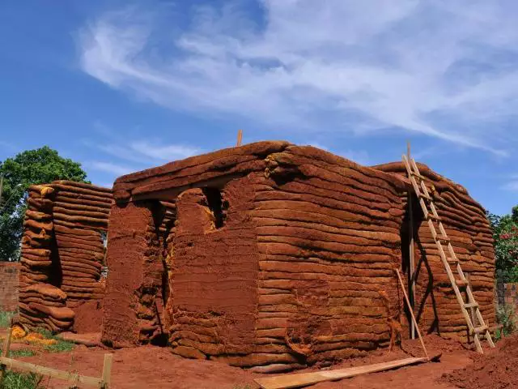
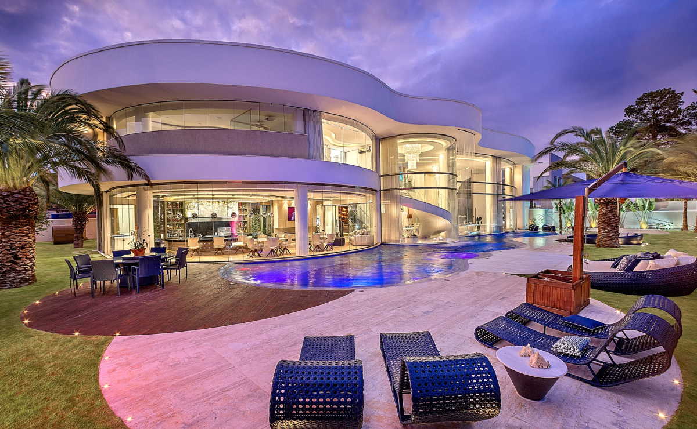

Meus projetos

Casa para a velha da Jéssica
Nesta casa utilizamos um material sem luxo, até porque ela não merece muita coisa, uma casa de barro é perfeita para uma velha que nem ela, recomendamos!!!!!!!!!!!!!!!!!!!!!!

Casa para o bruno guerrien
Como ele gastou todo o dinheiro dele com nintendo switch e zelda, acabou não tendo muitas condições para arcar com os custos, então essa foi a casa!!!!!! (esta nos devendo até hoje, caloteiro)

Casa para o cunhado do Bruno (ferrugem)
Após o termino com daniela guerrien, juntou dinheiro com anita, para fazer inveja, e hoje vivem felizes para sempre, nosso melhor projeto! (ACREDITAAAA AQUELE QUE SEMPRE TE DEU A MÃO)!